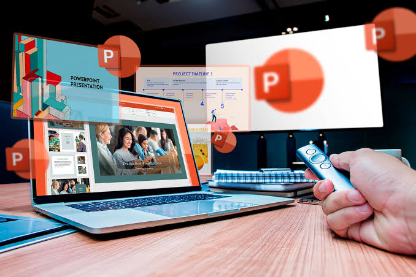

MICROSOFT POWER POINT

Es un software de ofimática de Microsoft diseñado para crear presentaciones visuales
.
Utiliza un formato de diapositivas donde puedes integrar texto, imágenes, gráficos y videos.
Es ampliamente utilizado en el ámbito laboral y educativo para exponer ideas de forma clara, dinámica y atractiva.
Características principales:
Diapositivas y Plantillas:
Permite diseñar diapositivas desde cero o utilizar plantillas profesionales predefinidas.
Elementos Multimedia:
Facilita la inserción de contenido interactivo como audio, video, formas y modelos 3D.
Animaciones y Transiciones:
Agrega movimiento a los objetos dentro de la diapositiva y efectos visuales al pasar de una a otra.
Integración:
Está conectado con la suite de Microsoft 365, permitiendo importar datos de Excel fácilmente y colaborar en equipo en tiempo real.
Algunas características de PowerPoint son:
- El uso de plantillas; que se pueden hacer por el usuario, además de las que ya están preestablecidas.
- Introducir texto variando el color y el tamaño de las letras conforme a la necesidad y gusto del usuario.
- Se pueden insertar imágenes con las que se da una mejor presentación a la diapositiva, facilitando comprender mejor a aquello de lo que trata la diapositiva, además de poderse insertar textos a las imágenes complementándose la exposición.
- Posee herramientas de animación, con las que se puede dar efectos a los textos e imágenes, dándole una mejor apariencia.
- Poder realizar gráficos.
- Poder añadir videos y audios.
- Posee la cualidad de abrir formatos de otras plataformas e incluso nos permite guardarlos en formatos diferentes al PowerPoint, por ejemplo, extensiones como: PPT o PPS, entre otras.
- Posee la cualidad de insertar hipervínculos.
¿Para qué sirve?
Es la herramienta estándar mundial para realizar ponencias, defender proyectos, impartir clases o mostrar planes de negocio. Funciona como un excelente apoyo visual que ayuda a resumir conceptos complejos y mantener la atención del público.
Las 5 partes principales de la interfaz de PowerPoint son:
-
El Panel de navegación (miniaturas)
-
La Cinta de opciones (herramientas)
-
el Área de trabajo (lienzo)
-
la Barra de estado
-
los Modos de visualización.
Las 5 reglas fundamentales para crear presentaciones efectivas en PowerPoint se centran en:
la simplicidad y en mantener la atención de la audiencia. Evitan el exceso de texto en pantalla y aseguran que la diapositiva sea un apoyo y no el sustituto de tu discurso.

Da un clic si deseas DESCARGAR